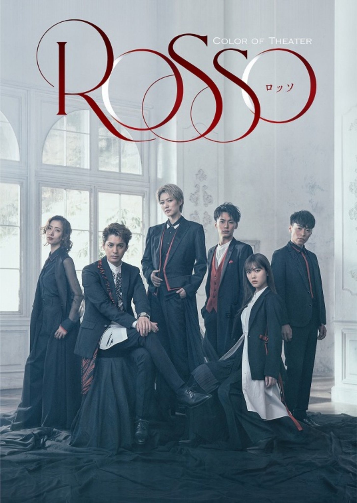

2021/0513Thu8歳☺︎
5月11日で
乃木坂46に加入して
8周年でした。
みなさんいつも応援してくれて
本当にありがとうございます！
みなさんの事がとっても大切で
愛おしいです☺︎
こんばんは！
伊藤純奈です！

Color of Theater 「ROSSO」
出演させて頂きます！
［出演］七海ひろき
大野拓朗
伊藤純奈（乃木坂46）
伶美うらら
東山光明
内海啓貴 ほか
［演出］TETSUHARU
［脚本］浅井さやか（One on One）
［公演日程］2021年6月27日(日)〜6月30日(水)
［劇場］TBS赤坂ACTシアター
久々の舞台です〜嬉しいなあ
無事幕が上がることを祈って...！
期間は短いですが最高の時間になる予感☺︎
公式HP
公式Twitter
https://twitter.com/coloroftheater?s=21

かっこいい〜！

先行抽選受付も始まっていますので
みなさんぜひぜひ〜
そして来週のANNに
みりあとおじゃましますꪔ̤̥

それでは！
2021/05/13 17:48
コメント(243)
純奈、こんばんは。。。。。
今日は夏日のところもあったけれど、
風があって、さわやかで涼しかった、、、
もう、衣替えしましたよ、、、
☆"ROSSO" 6月28日お昼公演当選しました !!
これで、プレリク先行へは行かなくてよくなった、、、
また、純奈の凛々しい姿が観られること
が何よりうれしいよ、、、
7月以降のミーグリも確保しないといけないね。
☆今度の ANN は、みり愛と三人とは、うれしいね。
２期生ミニトーク会になるのかな ?
※いろいろ、Youtube サーフィンしていたら、
２期生全員のお見立て会が出て来て、
純奈の「こんぺいとう」を見てしまった !!
宝石のように輝いていて、かわいかったよ。
第４波は登山中ですね、、、東京は、大阪を追いかけて増加??
３回目の『緊急事態宣言』延長拡大中 !!
くれぐれも身体を大切にしてくださいね。。。。。
今日は夏日のところもあったけれど、
風があって、さわやかで涼しかった、、、
もう、衣替えしましたよ、、、
☆"ROSSO" 6月28日お昼公演当選しました !!
これで、プレリク先行へは行かなくてよくなった、、、
また、純奈の凛々しい姿が観られること
が何よりうれしいよ、、、
7月以降のミーグリも確保しないといけないね。
☆今度の ANN は、みり愛と三人とは、うれしいね。
２期生ミニトーク会になるのかな ?
※いろいろ、Youtube サーフィンしていたら、
２期生全員のお見立て会が出て来て、
純奈の「こんぺいとう」を見てしまった !!
宝石のように輝いていて、かわいかったよ。
第４波は登山中ですね、、、東京は、大阪を追いかけて増加??
３回目の『緊急事態宣言』延長拡大中 !!
くれぐれも身体を大切にしてくださいね。。。。。
純ちゃんと言やあ舞台演技ってぐらいスゴイ人だから、期待大
そして、来週のオールナイトは嬉しいことに2期が3人も揃ってとのことでホントに楽しみだし、これからの2期のあり方、進み方について何か前向きで真面目な大人トークも聴けたらなあなんて勝手にドキドキしちゃってます
そして、来週のオールナイトは嬉しいことに2期が3人も揃ってとのことでホントに楽しみだし、これからの2期のあり方、進み方について何か前向きで真面目な大人トークも聴けたらなあなんて勝手にドキドキしちゃってます
純ちゃん、デビュー８周年おめでとう！(*≧∀≦*)
これからも、大好きな純ちゃんをいっぱい応援していくよ٩(^‿^)۶
舞台もファイト！
かわじん より
これからも、大好きな純ちゃんをいっぱい応援していくよ٩(^‿^)۶
舞台もファイト！
かわじん より
純奈お疲れ様。
待ちに待った舞台だね。
舞台＝純奈だから凄い楽しみだよ。
純奈のパワーでコロナを吹き飛ばして下さい。
待ちに待った舞台だね。
舞台＝純奈だから凄い楽しみだよ。
純奈のパワーでコロナを吹き飛ばして下さい。
純奈ちゃんモバメありがとう！
ボーダー組だいすき！
幻の2期生ライブ懐かしいね～！
ボーダー組だいすき！
幻の2期生ライブ懐かしいね～！
こんばんは。
山形県の與惣兵衛のだだちゃ豆が美味しいですよ。
通販で購入出来ますよ。
お酒がすすみますよ。
山形県の與惣兵衛のだだちゃ豆が美味しいですよ。
通販で購入出来ますよ。
お酒がすすみますよ。
純奈さん、こんばんは。
モバメの素敵な写真は、ボーダーメンバーのようですが、いつの写真ですか。モバメにでも情報お願いします。
お元気で！
モバメの素敵な写真は、ボーダーメンバーのようですが、いつの写真ですか。モバメにでも情報お願いします。
お元気で！
純奈ー。こんばんは。＾＾
近頃はアンダラに向けて絶賛準備中ですか？
たまちゃんに可愛いって言われた時の純奈の様子を見たかったな。
「ROSSO」の6月30日千秋楽公演のチケット取れました。＾＾
うれしみの極み。(笑)
会社は休み取って観に行くよ。無事に幕が上がりますように。
もう稽古は始まっているのかな？
アンダラに舞台にと立て続けに大きな仕事が続いて大変だと思うけど、ケガや病気のないように気を付けながら頑張ってください。
自分もちゃんと純奈の活躍を見届けられるように、健康に気を付けながら日常を頑張るよ。(^_^)/
近頃はアンダラに向けて絶賛準備中ですか？
たまちゃんに可愛いって言われた時の純奈の様子を見たかったな。
「ROSSO」の6月30日千秋楽公演のチケット取れました。＾＾
うれしみの極み。(笑)
会社は休み取って観に行くよ。無事に幕が上がりますように。
もう稽古は始まっているのかな？
アンダラに舞台にと立て続けに大きな仕事が続いて大変だと思うけど、ケガや病気のないように気を付けながら頑張ってください。
自分もちゃんと純奈の活躍を見届けられるように、健康に気を付けながら日常を頑張るよ。(^_^)/
純ちゃん！ブログ更新ありがとうございます！！！
舞台行きたいです〜！まだ純ちゃんの舞台行ったことないからいつか絶対行きたいと思ってたので絶対行きたいです！
お稽古がんばってください！！
ミーグリ7/25(日)当たりました！！
純ちゃんとまたお話できるの楽しみ(人*´∀｀)｡*ﾟ+
おぼえてるかな…前回純ちゃんのお顔お絵描きした人です…
またお絵描きする！思い出してくれたら嬉しいな
今回は純ちゃんに覚えてもらえるようにがんばる！ちゃんとお話する！今から凄い楽しみ〜(≧▽≦)
アンダラもありますね！！観れるようにがんばります笑
なかなか直接お会いする機会がなくて寂しいですけどいろんなところから私からの愛を届けたいです(｡･ω･｡)ﾉ♡
純ちゃんもお身体には本当にお気を付けて、お仕事頑張ってください！
ずっと応援してます！
純ちゃん大好き
はづきより
舞台行きたいです〜！まだ純ちゃんの舞台行ったことないからいつか絶対行きたいと思ってたので絶対行きたいです！
お稽古がんばってください！！
ミーグリ7/25(日)当たりました！！
純ちゃんとまたお話できるの楽しみ(人*´∀｀)｡*ﾟ+
おぼえてるかな…前回純ちゃんのお顔お絵描きした人です…
またお絵描きする！思い出してくれたら嬉しいな
今回は純ちゃんに覚えてもらえるようにがんばる！ちゃんとお話する！今から凄い楽しみ〜(≧▽≦)
アンダラもありますね！！観れるようにがんばります笑
なかなか直接お会いする機会がなくて寂しいですけどいろんなところから私からの愛を届けたいです(｡･ω･｡)ﾉ♡
純ちゃんもお身体には本当にお気を付けて、お仕事頑張ってください！
ずっと応援してます！
純ちゃん大好き
はづきより
8周年おめでとう。
僕はライブの純奈さま、舞台の純奈さま、
どちらも好きです。
阿呆浪士のすずは、可愛いのに りりしくて
殺陣も立派でした。
こんどのROSSOのビジュアル、本当に格好いいですね。
久しぶりの舞台、本当に楽しみです。
メルマガ先行、当選して良かった～
開演できますように！
僕はライブの純奈さま、舞台の純奈さま、
どちらも好きです。
阿呆浪士のすずは、可愛いのに りりしくて
殺陣も立派でした。
こんどのROSSOのビジュアル、本当に格好いいですね。
久しぶりの舞台、本当に楽しみです。
メルマガ先行、当選して良かった～
開演できますように！
純奈さん、ブログ更新ありがとう。どこにでもいるおっさんです。
純奈はやっぱりカッコいいね。
8周年おめでとう。
そして、ありがとう。
2期生大好きです。
それでは！
ひでき
純奈はやっぱりカッコいいね。
8周年おめでとう。
そして、ありがとう。
2期生大好きです。
それでは！
ひでき
カチューシャかわいい！
ＲＯＳＳＯかっこいい！
ＲＯＳＳＯかっこいい！
８周年おめでとう。
アンダーライブ、舞台身体に気を付けて頑張って下さい。
アンダーライブ、舞台身体に気を付けて頑張って下さい。
じゅんなちゃん
ブログ更新ありがとうねぇ
ミーグリの前にアンダーライブとか
舞台ROSSOの出演決定とか
バースデーライブ終わってからも
うれしいこと い〜っぱいだなぁ
Instagramもいっぱい更新してくれて
ありがとう〜
かわいい♡じゅんなちゃん見ると
ぽわん ってなるの
ほっこり するの
しあわせだなぁ〜♡
ROSSO当たったーーーッので
楽しみです♪
でわまた コメントしますね
ブログ更新ありがとうねぇ
ミーグリの前にアンダーライブとか
舞台ROSSOの出演決定とか
バースデーライブ終わってからも
うれしいこと い〜っぱいだなぁ
Instagramもいっぱい更新してくれて
ありがとう〜
かわいい♡じゅんなちゃん見ると
ぽわん ってなるの
ほっこり するの
しあわせだなぁ〜♡
ROSSO当たったーーーッので
楽しみです♪
でわまた コメントしますね
８周年おめでとう！！！
ROSSOめっちゃかっこいい
楽しみだね
ROSSOめっちゃかっこいい
楽しみだね
舞台当たった！
楽しみ！
ビジュアルで既に楽しみ！
ズルいわ～
楽しみ！
ビジュアルで既に楽しみ！
ズルいわ～
ANN楽しみ〜！
舞台観に行ったことないけど、初観に行ったろかな！当たればだけど！笑
最後の写真の二人の笑顔が超好き笑
これからも頑張って！
舞台観に行ったことないけど、初観に行ったろかな！当たればだけど！笑
最後の写真の二人の笑顔が超好き笑
これからも頑張って！
純奈ちゃん8周年おめでとう〜！！だいすきです⸜❤︎⸝
舞台がんばってね〜！！︎︎︎︎︎☺︎
舞台がんばってね〜！！︎︎︎︎︎☺︎
みりー
じゅんこ
じゅんこ
純ちゃん大スコ♥️
私は、ちま推しなの。舞台行くよ 初日は夜しか取れなかったけど、昼も別で申し込んだ。
ズカのOGさんと共演楽しみです。
私は、ちま推しなの。舞台行くよ 初日は夜しか取れなかったけど、昼も別で申し込んだ。
ズカのOGさんと共演楽しみです。
純奈ちゃん
お疲れ様
これからも頑張ってくださいね
お疲れ様
これからも頑張ってくださいね
8周年おめでとう＾＾
最近の純奈の美女感が止まらなくて目を奪われる(*´꒳`*)
最近の純奈の美女感が止まらなくて目を奪われる(*´꒳`*)
純奈ちゃん、8周年おめでとう
久々の舞台、ROSSO頑張って下さい。
初日と千穐楽にチケット取れましたので楽しみにしています。
ずっと大好きだよ〜
久々の舞台、ROSSO頑張って下さい。
初日と千穐楽にチケット取れましたので楽しみにしています。
ずっと大好きだよ〜
今はまだ、これぐらいでいいよ。
応援してます。
純奈さんを見てるとなんか頑張れます。
純奈さんを見てるとなんか頑張れます。
世間の状況的に色々見通しが立たないけど、ずんなを応援してます！
8歳おめでとう☺︎
伊藤さん、こんにちは。
2013年5月。プリンシパル公演真っ盛りの中、幕間で当時乃木坂46に加入したばかりの二期生が毎日紹介されていたときのことは、まるで昨日のことのようによく憶えています。あのときのお披露目から晴れて8周年。おめでとうございます！
時が経ち磨き磨かれ、二期生もそれぞれ成長していて感慨深いです。純奈さんについて言えば、「アイドルとしてはもちろん、いい女優さんになったなあ」という思いです。
そんな女優 伊藤純奈が舞台に帰ってきた！ 新しい舞台『ROSSO』への出演決定おめでとうございます。ポスターのビジュアル見るだけで本格的な舞台のカッコよさが伝わってきます。実力者ぞろいの共演者の皆さんとすてきな舞台を創り上げてください。
来週の二期生トリオによる『ANN』も楽しみ。みり愛さんの子守、よろしく頼みますね（←こらこら 笑）。
ではまたコメントします。
さらばだ、また会おう！（気球に乗って去りぬ〜）
2013年5月。プリンシパル公演真っ盛りの中、幕間で当時乃木坂46に加入したばかりの二期生が毎日紹介されていたときのことは、まるで昨日のことのようによく憶えています。あのときのお披露目から晴れて8周年。おめでとうございます！
時が経ち磨き磨かれ、二期生もそれぞれ成長していて感慨深いです。純奈さんについて言えば、「アイドルとしてはもちろん、いい女優さんになったなあ」という思いです。
そんな女優 伊藤純奈が舞台に帰ってきた！ 新しい舞台『ROSSO』への出演決定おめでとうございます。ポスターのビジュアル見るだけで本格的な舞台のカッコよさが伝わってきます。実力者ぞろいの共演者の皆さんとすてきな舞台を創り上げてください。
来週の二期生トリオによる『ANN』も楽しみ。みり愛さんの子守、よろしく頼みますね（←こらこら 笑）。
ではまたコメントします。
さらばだ、また会おう！（気球に乗って去りぬ〜）
純奈、こんにちは。。。。。
さわやかな五月晴れ続きでしたが、今日はもう暑い、、、
☆「3月個別写真」届きました、、、
毎回大量購入していますが、
あいうえお順なので、純奈は束の最初にいます、、、
"9th BD Live" の期生別というスタイルで、
Ｔシャツとかわいい衣装の２種類があります、、、
超絶、メチャクチャ、かわいい純菜になっています !!
今度のミーグリのときにお見せしますね、、、
26th から引退予定でしたのに、27th も止まらない、、、
でも、goods は生誕以外は、引退傾向になりますかな、、、
☆『アンダーライブ2021』モバイル会員チケット入手 !!
これで、26日に２回、楽しめます、、、
昨日、寝室兼書斎に大きな蚊が居座ってしまったので、
居間で、
『アンダーライブ2020』３日目を見ました !!
※TBS channel で放送したもので、
アンコールのないものですが、、、
この３日目は、武道館の最後列から5列目に居ました。
３日目は、Non-stop Underlive で、
多くの名曲が、異なるセンターで楽しめて、
好企画でした、、、
純奈も輝いていましたヨ、、、
たまみ座長で、最後の
『口ほどにないKISS』には特に感動しました !!
改めて考えると、「乃木中」でもスタジオライブがなく、(*)
よくアンダーを呼んでくれる番組での放送もなかった
そう考えて、深夜に一人で見ていたら、涙してしまいました、、、
第４波は登山中ですね、、、東京は、大阪を追いかけて増加??
３回目の『緊急事態宣言』延長中 !!
くれぐれも身体を大切にしてくださいね。。。。。
(*) 2/22 にあったようです、、、、
さわやかな五月晴れ続きでしたが、今日はもう暑い、、、
☆「3月個別写真」届きました、、、
毎回大量購入していますが、
あいうえお順なので、純奈は束の最初にいます、、、
"9th BD Live" の期生別というスタイルで、
Ｔシャツとかわいい衣装の２種類があります、、、
超絶、メチャクチャ、かわいい純菜になっています !!
今度のミーグリのときにお見せしますね、、、
26th から引退予定でしたのに、27th も止まらない、、、
でも、goods は生誕以外は、引退傾向になりますかな、、、
☆『アンダーライブ2021』モバイル会員チケット入手 !!
これで、26日に２回、楽しめます、、、
昨日、寝室兼書斎に大きな蚊が居座ってしまったので、
居間で、
『アンダーライブ2020』３日目を見ました !!
※TBS channel で放送したもので、
アンコールのないものですが、、、
この３日目は、武道館の最後列から5列目に居ました。
３日目は、Non-stop Underlive で、
多くの名曲が、異なるセンターで楽しめて、
好企画でした、、、
純奈も輝いていましたヨ、、、
たまみ座長で、最後の
『口ほどにないKISS』には特に感動しました !!
改めて考えると、「乃木中」でもスタジオライブがなく、(*)
よくアンダーを呼んでくれる番組での放送もなかった
そう考えて、深夜に一人で見ていたら、涙してしまいました、、、
第４波は登山中ですね、、、東京は、大阪を追いかけて増加??
３回目の『緊急事態宣言』延長中 !!
くれぐれも身体を大切にしてくださいね。。。。。
(*) 2/22 にあったようです、、、、
純奈ちゃんモバメありがとう～！
自撮りめちゃくちゃかわいい
自撮りめちゃくちゃかわいい
おめでとう
純奈〜♪
こんばんはっ！
なぜだか、急にコメントが
反映されなくなりした
ずっきゅん依存症は元気です(´ω｀)
こんばんはっ！
なぜだか、急にコメントが
反映されなくなりした
ずっきゅん依存症は元気です(´ω｀)
純奈、こんばんは＼(^-^)／
ブログありがとう。
そしてそして、8周年おめでとう！！
なんか、大人っぽそうな舞台だね
今、メンバーたちみんな舞台頑張っているよね。
こういうご時世だから、無事に舞台を公演できるかどうかがちょっと心配になってしまうよね。
ちなみに映画の話なんだけど、狙っていた映画が2本公開延期になったよ
ブログありがとう。
そしてそして、8周年おめでとう！！
なんか、大人っぽそうな舞台だね
今、メンバーたちみんな舞台頑張っているよね。
こういうご時世だから、無事に舞台を公演できるかどうかがちょっと心配になってしまうよね。
ちなみに映画の話なんだけど、狙っていた映画が2本公開延期になったよ
大好き！！！
遅ればせながら、
祝！8周年！！
おめでとう！
舞台も雰囲気めちゃくちゃかっこいい感じだねっ！
最近の髪色変えてロングのきゃわわな感じ好き好きよ
舞台頑張ってね！
シタ
祝！8周年！！
おめでとう！
舞台も雰囲気めちゃくちゃかっこいい感じだねっ！
最近の髪色変えてロングのきゃわわな感じ好き好きよ
舞台頑張ってね！
シタ
純奈ちゃんのことを応援することができてほんとに幸せだったよ！
アンダラと舞台で純奈ちゃんの活躍が見れるのもミーグリでお話できるのも楽しみにしてるよ～！
卒業しちゃうのは寂しすぎるけど、卒業したあとも純奈ちゃんのことだいすきだしずっと応援するよ！
アンダラと舞台で純奈ちゃんの活躍が見れるのもミーグリでお話できるのも楽しみにしてるよ～！
卒業しちゃうのは寂しすぎるけど、卒業したあとも純奈ちゃんのことだいすきだしずっと応援するよ！
8周年と舞台出演おめでとう～(*^^*)
デビュー8周年おめでとうございます！
80周年もお祝いしたい心持ち！
ROSSOもアンダーライブも必ず観ますよ〜。もちろんミーグリも！楽しみが沢山待ってるから仕事頑張れます！ありがとう。
80周年もお祝いしたい心持ち！
ROSSOもアンダーライブも必ず観ますよ〜。もちろんミーグリも！楽しみが沢山待ってるから仕事頑張れます！ありがとう。
純奈ちゃん、舞台出演おめでとう ❣️
服も惚れる位似合って居ます❣️
服も惚れる位似合って居ます❣️
勝利をいだく… 明日のために…
純奈ちゃんアンダーライブ本当に本当に最高だったよー！！
みんなの笑顔がもとっても素敵だったし、涙もとても綺麗で僕も沢山泣いてしまったよ！
純奈ちゃんとみり愛ちゃんの最後のライブを観れて本当に幸せ！！
純奈ちゃんの歌声そしてパフォーマンスしっかりと見届けたよ！！
残りの時間もみんなと沢山想い出つくろうね！！
アンダーライブ本当にありがとう！！
そしてお疲れ様！！
純奈ちゃん大好きだよー！！！
みんなの笑顔がもとっても素敵だったし、涙もとても綺麗で僕も沢山泣いてしまったよ！
純奈ちゃんとみり愛ちゃんの最後のライブを観れて本当に幸せ！！
純奈ちゃんの歌声そしてパフォーマンスしっかりと見届けたよ！！
残りの時間もみんなと沢山想い出つくろうね！！
アンダーライブ本当にありがとう！！
そしてお疲れ様！！
純奈ちゃん大好きだよー！！！
8周年おめでとう


もうアンダーライブの企画は決まったのでしょうか。純奈さんのソロ曲に期待しています。
体に気をつけて！